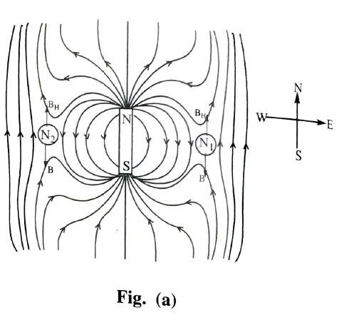
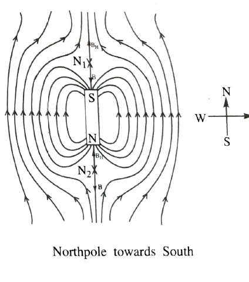

To draw the magnetic lines of force of combined magnetic field due to earth and the short bar magnetic and to locate the null points and hence to determine the magnetic and pole strength.
a) When a magnetic is kept in the magnetic meridian with its N pole pointing geographical north,the null point are formed on the equatorial line on either side of the magnet at equal distance'd'.
BH is the horizontal component of earth magnetic field.
B is the magnetic field due to the bar magnet at null points.
As the resultant magnetic field at null point is zero.
BH=B and act in opposite in direction
\(B_{H}=\frac{\mu _{0}}{4\pi }\frac{M}{(d^{2}+l^{2})^{\frac{3}{2}}}\, for\, a\, bar\, magnet.\)
\(B_{H}=\frac{\mu _{0}}{4\pi \pi }\frac{M}{d^{3}}\, for\, a\, short\, bar\, magnet.\)
The line joining the earth south-north direction is drawn with the hepl of the magnetic compass needle.This gives the direction of magnetic meridian.Magnet is kept on this line with its N pole towards the earth north.
The compass needle is arranged near the pole of magnet such that its 'S' polecincidind with a point already marked.It aligns in the resultant magnetic field.Now the position of the 'n' pole of needle is marked with a pencil on the paper.Now the compass is moved so that its 'S' pole of compass needle coincides with the point now marked.Again the needle align in the magnetic field there. now it,s 'n pole' is marked by the pencil.This procedure is continued untill the compass reaches the 'S' pole of magnet.All the pencil marks are joined by a smooth curve.This gives the magnetic line of force.The experiment is repeated by keping the compass at different points near N pole.A number of magnetic lines of force are drawn from the different point following the above procedure.Now the compass is moved away perpendicular to its axis from mid point.At a point the needle aligns in any position showing the null point N1. The procedure is repeated on,the other side of the magnet and the other null point N2 is located.The magnet is removed and the distance between N1 and N2 is measured.It is equal to 2d. and 'd' is calculated
using the formula\(B_{H}=\frac{\mu _{0}}{4\pi }\, \frac{M}{d^{3}}\) M is calculated. And using M=pole strength(m) X length of the magnet(2l) pole stength 'm' is calculated.
horizontal component of earth's magnet field BH = 0.38X10-4T.
Distance between the null points N1 N2 =2d.
\(\therefore \, d= m.\)
Geometrical length of the magnet measured by scale L= m.
Magnetic length \(2l=\frac{5}{6}L= m.\)
\(B_{H}=\frac{\mu _{0}}{4\pi }\, X\frac{M}{d^{3}}=10^{-7}\frac{M}{d^{3}}\)
Calculated value of M= Am2
\(pole\, strength=m=\frac{M}{2l}= Am\)
When a megnet is kept in the earth's magnetic meridian with it N pole pointing geographical south,two Null points are formed ont the axial line on either side at equal distance(d).
(b) When a magnet is kept in the earth magnetic meridian with its N pole pointing geographical south two null points are formed on the axial line on either side at equal distance(d).BH is the horizontal component of earths magnetic field and B is the magnetic field due to the magnet.At null point the resultant magnetic field is zero.
Hence BH=B and act in opposite direction
\(B_{H}=\frac{\mu _{0}}{4\pi }\frac{2Md}{(d^{2}-l^{2})^{2}}\, for\, a\, bar\, magnet.\)
\(B_{H}=\frac{\mu _{0}}{4\pi }\frac{2M}{d^{^{3}}}\, for\, a\, short\, barmagnet.\)
White paper is fixed to the drawing board.The line joining earth's geographical north and south direction is drawn with the help of the magnetic compass needle.This gives the direction of magnetic meridian.The magnet is kept on this line with its N pole towards the earth's geographical south. The compass needle is arranged near the N pole of the magnet such that it's 'S'pole coincides with a point already marked.It aligns in the resultant magnetic field.Now the posotion of 'N'pole of the needle is marked with a pencil on the paper.Now the compass is moved so that it's 'S' pole coincides with the point now marked.At this position again the needle aligns in the resultant magnetic field.Now the 'N' pole of the needle is marked by the pencil on the paper.This procedure is continued till the compass reaches 'S' pole of the magnet.All the pencil marks are joined with a smooth line.This is the magnetic field of force.the experiment is repeated by keeping the compass at different points near N pole of the magnet.A number of magnetic lines of force are drawn from the different points following the above process.
Now the compass is moved away from the center of magnet along the axis of the magnet.At a point the needle rotates on further moving away through a small distance a point is reached where the needle aligns in any direction showing the null point.This position N1 is noted.The procedure is repeated pn the other side of the magnet and the other null point N2 is located.The magnet is removed and the distance between N1 and N2 is measured.N1N2 =2d Hence 'd'is calculated.
\(Using\, the formula\, B_{H}=\frac{\mu _{0}}{4\pi }\frac{2M}{d^{3}}\, M\, is\, calculated.\) and using M=pole strength(m)XLength of the magnet(2l) 'm' is clculated.
horizontal component of earth magnetic field BH=0.38 X 10-4T
Distance between the null points N1 N2 =2d m.
\(\therefore\) d=m
Geometric length of the magnet as measured by scale L= m.
\(The\, magnetic\, length\, 2l=\frac{5}{6}L= m.\)
\(B_{H}=\frac{\mu _{0}}{4\pi }\frac{2M}{d^{3}}=10^{-7}\frac{2M}{d^{3}}\).
\(\therefore\) calculate value of M= Am2.
Pole strength =\(\frac{M}{2l}\)= Am.